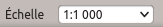
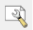
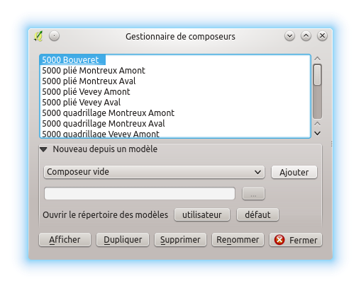
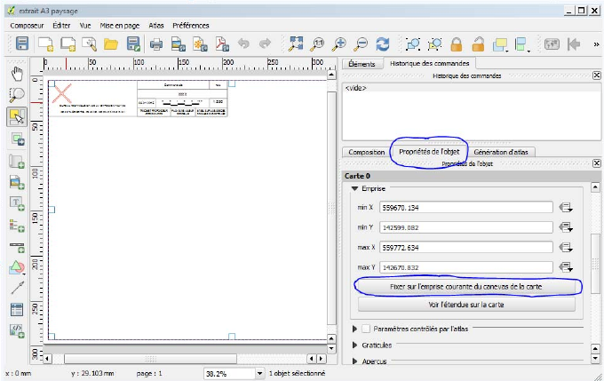
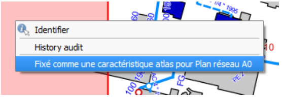

3.6. Tisk v QWAT
3.6.1. Tisk různých plánů
Chcete-li vytisknout konkrétní oblast, přibližte ji k oblasti tak, aby byla zcela viditelná na obrazovce. Dále, v pravé dolní části QGis je okno „Měřítko“.
Vyberte měřítko, které chcete při tisku, a upravte oblast.
Poté klikněte na tlačítko „Správce kompozice“
Otevře se následující okno:
Poté vyberte požadovaný formát stránky a klikněte na „Zobrazit“. Otevře se nové okno:
Klikněte na kartu „Vlastnosti objektu“ a na tlačítko „Oprava v aktuální oblasti mapového plátna“. Váš plán je proto připraven k tisku!
3.6.2. Tisk plánů sítě
Pokud jde o zobrazení podle mřížky pro naše plány „sítě“ (A0), stačí kliknout na tlačítko „identifikovat entity“
Poté klikněte pravým tlačítkem na oblast, kterou chcete vytisknout. Otevře se následující tabulka:
Zvolte „Opraveno jako funkce atlasu pro plán sítě A0“ a stále budete mít nové okno, které by se mělo otevřít. V tomto okně je vaše vybraná oblast s příslušnou titulní stránkou, takže vše, co musíte udělat, je vytisknout svůj plán!